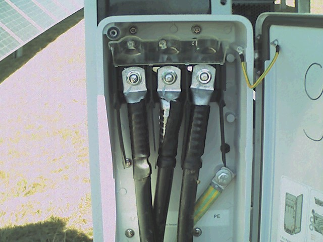
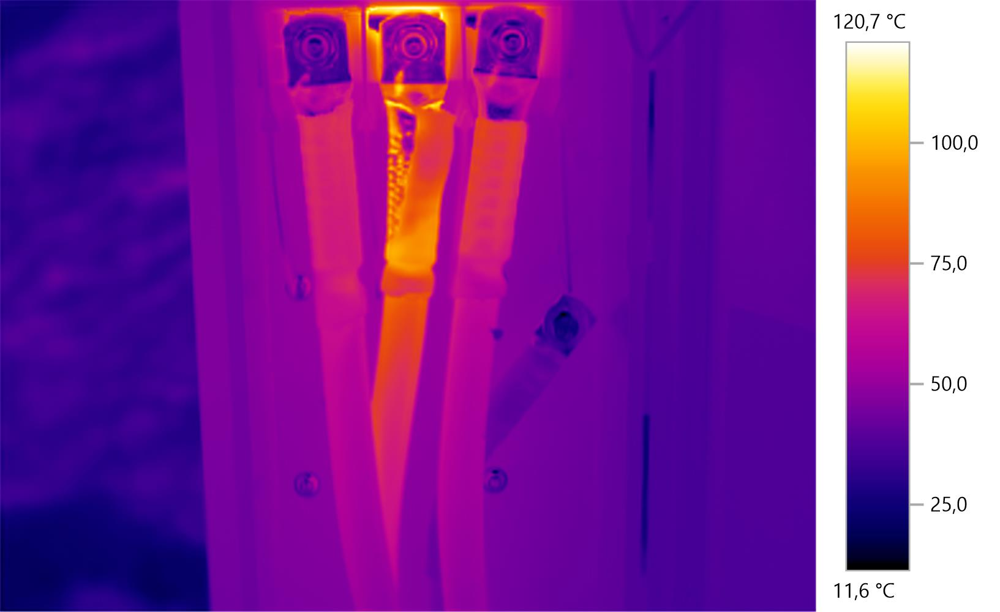

Hőkamerás vizsgálat
Ami szemmel még nem feltétlenül látható, az mérési adatokban már jelezheti egy rendszerhiba vagy rendellenesség lehetőségét. A hőkamerás vizsgálat ezeknek az eltéréseknek a felismerését támogatja.
Egy láthatatlan eltérés is költséges problémává válhat.
Egy naperőmű számos olyan villamos és műszaki eltérést tartalmazhat, amely szemrevételezéssel nem vagy csak nehezen azonosítható.
A hőkamerás vizsgálat lehetőséget ad arra, hogy a vizsgált elemek hőmérsékleti eltérései alapján olyan pontokra is felhívjuk a figyelmet, amelyek további ellenőrzést igényelhetnek.
A cél nem önmagában a mérés, hanem az, hogy az esetleges problémák felismerése minél korábban megtörténjen, és ezáltal támogassuk a rendszer üzembiztonságát.
A probléma sokszor szabad szemmel nem látható.
Egy egyszerű fényképen sok esetben nem látható, hogy egy villamos kötés vagy kábel rendellenesen melegszik. A hőkamerás vizsgálat azonban olyan hőmérsékleti eltéréseket is megmutathat, amelyek további ellenőrzést igényelnek.

Szabad szemmel
A normál fényképen első ránézésre nem feltétlenül látható rendellenesség. A csatlakozás és a kábelek külső megjelenése nem feltétlenül árulkodik arról, hogy a háttérben jelentős hőmérsékleti eltérés alakult ki.

Hőkamerás felvétel
A hőkamerás felvételen azonban már jól látható a jelentős hőmérsékleti eltérés. A középső kábelcsatlakozás környezetében kiemelkedően magas hőmérséklet figyelhető meg, amely olyan problémára utalhat, amely további ellenőrzést és beavatkozást igényelhet.
Látható rendszer. Mérhető eltérések.
Napelem modulok
A vizsgált napelem modulok hőmérsékleti eltéréseinek ellenőrzése és a további figyelmet igénylő pontok azonosítása.
Villamos kötések
A hozzáférhető villamos csatlakozási pontok és kötések hőmérsékleti viszonyainak vizsgálata.
Berendezések
A vizsgálat körébe bevont villamos berendezések hőmérsékleti viszonyainak ellenőrzése.
Eredmények dokumentálása
A feltárt eltérések és a további vizsgálatot igénylő pontok rögzítése a következő üzemeltetési lépések támogatására.
Mérünk. Értékelünk. Intézkedünk.
A hőkamerás vizsgálat értéke nem önmagában a mérésben van, hanem abban, hogy a mérési eredmények alapján azonosíthatóvá válhatnak a további figyelmet vagy beavatkozást igénylő területek.
Vizsgálat előkészítése
A vizsgálandó rendszer és területek meghatározása a rendelkezésre álló műszaki információk alapján.
Hőkamerás mérés
A kijelölt berendezések és rendszerkomponensek hőmérsékleti viszonyainak vizsgálata.
Eltérések értékelése
A mérési eredmények áttekintése és a további figyelmet igénylő pontok azonosítása.
Dokumentálás
A vizsgálat eredményeinek és megállapításainak rögzítése a további üzemeltetési döntésekhez.
A probléma felismerése idővel értéket teremt.
A rendszeres állapotellenőrzés segíthet abban, hogy a további vizsgálatot igénylő eltérések még azelőtt kerüljenek a figyelem középpontjába, hogy jelentősebb üzemeltetési problémává váljanak.
Kapcsolatfelvétel →